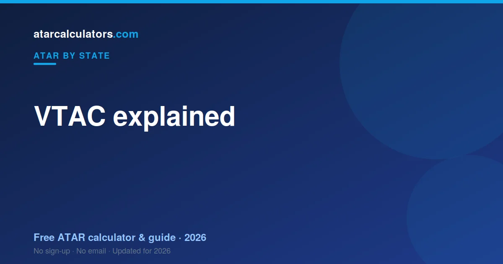

VTAC, the Victorian Tertiary Admissions Centre, is the body that scales VCE results, calculates the ATAR, and manages university applications for Victorian students. VCAA sets and marks the VCE exams and gives you your study scores; VTAC scales those scores, works out your ATAR, and processes your university preferences.
Key takeaways
- VTAC is the Victorian Tertiary Admissions Centre.
- It scales VCE study scores and works out your ATAR.
- It also manages your university applications and preferences.
- VCAA is different: it sets and marks the VCE and gives you study scores.
- So VCAA gives you your study scores; VTAC gives you your ATAR.
- You register with VTAC during Year 12 to apply for university.

What is VTAC?
VTAC stands for the Victorian Tertiary Admissions Centre. It is a central body that handles university admissions for students in Victoria.
Rather than applying to each university separately, you apply once through VTAC and list your course preferences. VTAC then processes those applications on behalf of the universities.
What does VTAC do?
VTAC does three main jobs. It scales your VCE study scores. It calculates your ATAR from those scaled scores. And it manages your university applications and preferences.
So VTAC is involved at both ends: it turns your VCE results into an ATAR, and it uses that ATAR to process your university offers.
VTAC versus VCAA: what is the difference?
This trips up a lot of students. VCAA, the Victorian Curriculum and Assessment Authority, runs the VCE. It sets your courses, writes your exams, and gives you your study scores.
VTAC takes over from there. It scales those study scores and works out your ATAR. In short: VCAA gives you your study scores; VTAC gives you your ATAR. They are two separate bodies with two separate jobs.
How VTAC works out your ATAR
Once VCAA releases your study scores, VTAC scales each subject, based on how strong its cohort is. It then builds an aggregate from your English study, your next best three scaled scores, and 10% of a fifth and sixth.
That aggregate is ranked against your age group and turned into your ATAR, from 0.00 to 99.95. We cover the full process in how is ATAR calculated in VIC.
Applying to university through VTAC
During Year 12, you register with VTAC and list your university course preferences, in order. You can change these preferences up to certain deadlines, including after you receive your ATAR.
After results, VTAC matches your ATAR and selection rank against course cutoffs and sends offers in rounds. You do not apply to each university separately — VTAC handles it centrally.
Key VTAC dates
The VTAC year has a few key moments: registration and preference deadlines during the year, ATAR release in mid-December, and offer rounds through January and February.
VTAC publishes exact dates on its website. It is worth noting the preference-change deadlines, because you can adjust your choices after seeing your ATAR. See the VIC results timeline.
Estimate your ATAR
You can estimate your ATAR before VTAC releases the official one. Our VIC ATAR calculator uses the latest official scaling to estimate your ATAR from your study scores.
It is a guide, not your official VTAC result, but it helps you plan your preferences with realistic expectations.
VTAC and the ATAR: the full picture
VTAC sits between school and university in Victoria. It takes your scaled VCE study scores, works out your ATAR, and then uses that ATAR to process your university applications.
So VTAC is involved at both ends. It turns your VCE results into a rank, and it uses that rank to send you offers. Your school and VCAA handle the VCE itself; VTAC handles the ATAR and admissions.
What else VTAC handles
Beyond the ATAR, VTAC runs several schemes worth knowing. The Special Entry Access Scheme, or SEAS, supports students who faced disadvantage during Year 12. VTAC also manages many scholarship applications in one place.
So it is worth exploring the VTAC site early, not just at results time, because some of these schemes have deadlines during the year. Applying for SEAS, for example, can lift your chances at a course if you qualify.
VTAC versus VCAA in detail
These two bodies are easy to mix up. VCAA, the Victorian Curriculum and Assessment Authority, runs the VCE: it sets your subjects, your exams, and your study scores. VTAC, the Victorian Tertiary Admissions Centre, takes those scores, scales them, and works out your ATAR.
In short: VCAA gives you your study scores; VTAC gives you your ATAR. VCAA is about your schooling; VTAC is about university entry. Keeping them apart makes results day much clearer.
How VTAC preferences work
Through VTAC, you list your university courses in order of preference, rather than applying to each separately. VTAC then tries to give you an offer for the highest preference you qualify for.
You can change your preferences up to set deadlines, including after your ATAR is released. So it is worth listing a range: a reach course, a solid match, and a safe option, then adjusting once you see your rank.
Key VTAC dates through the year
The VTAC year has a rhythm. Applications and scheme deadlines, including SEAS and scholarships, fall during the year. Preferences can be set and changed up to certain dates, including after your ATAR.
Then ATAR release comes in December, followed by offer rounds through January and February. Note the preference-change deadlines especially, because you can adjust your choices once you see your ATAR. See the VIC results timeline.
The offer rounds explained
Offers are not all made at once. VTAC releases them in rounds, starting with a main round in January and continuing through January and February.
If you do not receive your first preference in the main round, later rounds still give you chances, and you can adjust preferences between rounds. A quiet first round is not the end of the process.
Changing your preferences after results
One of the most useful things VTAC lets you do is change your course preferences after your ATAR is released. So if your number is higher or lower than expected, you can re-order your list to match.
There are deadlines for these changes, so note them. Adjusting your preferences once you know your real ATAR is a simple way to make the most of your result.
Getting help from VTAC
VTAC publishes detailed guides on its website covering applications, preferences, SEAS, scholarships and key dates. Most questions students have are answered there, so it is worth reading before results time.
If you are stuck, VTAC has support channels to help with your application and preferences. Reaching out early, rather than in the rush around results day, means you get clear answers when it counts.
Common questions
What is VTAC?
VTAC is the Victorian Tertiary Admissions Centre, the body that manages university admissions for Victorian students. It scales VCE study scores, calculates the ATAR, and processes university applications.
What does VTAC do?
VTAC scales your VCE study scores, works out your ATAR, and manages your university applications and course preferences. It handles admissions centrally, so you apply once rather than to each university.
Is VTAC the same as VCAA?
No. VCAA sets and marks the VCE and gives you your study scores. VTAC scales those scores and works out your ATAR. VCAA gives you your study scores; VTAC gives you your ATAR.
How does VTAC work out my ATAR?
VTAC scales each VCE subject based on its cohort, then builds an aggregate from your English study, your next best three scaled scores, and 10% of a fifth and sixth, and ranks it into an ATAR from 0.00 to 99.95.
What is the difference between VTAC and VCAA?
VCAA runs the VCE: it sets your subjects, exams, and study scores. VTAC takes those scores, scales them, and works out your ATAR, then processes your university applications. VCAA gives you your study scores; VTAC gives you your ATAR.
Does VTAC handle SEAS and scholarships?
Yes. Beyond the ATAR, VTAC runs the Special Entry Access Scheme (SEAS) for students who faced disadvantage, and manages many scholarship applications in one place, often with deadlines during the year.